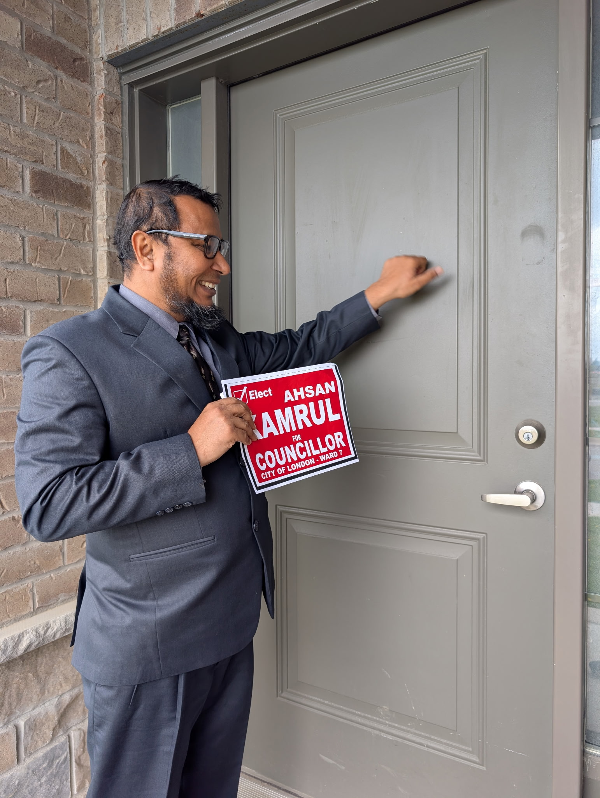

Ward 7 City Council Candidate · London, Ontario · 2026
Ward 7 is the fastest-growing part of London. New subdivisions keep going up on Sunningdale, Fox Hollow, and Hyde Park, with roads that are already overwhelmed and transit that still doesn't exist. The gap between growth and infrastructure isn't inevitable. I'm running to close it.
Sunningdale Road had a gravel shoulder for over a decade while subdivision after subdivision was approved and filled in around it. It took an $18M provincial grant to finally get the widening started. By the time it's done, another 1,360 units are proposed just north of it. There is still no rapid transit serving any of it.
After the boundary redraw, Ward 7 takes in the growth frontier of northwest London: Sunningdale, Fox Hollow, Hyde Park, Medway. I'm running to make sure it gets transit, walkability, and a fair share of the city's capital plan.

I'm a mechanical engineer, business owner, and community organizer with over 20 years in manufacturing, international trade, and grassroots civic engagement, most of it in London and Middlesex County. Ward 7 is where I live, and it's the community I want to get right.
As Director of BCB Metal Inc. in London, I work daily in supply chain, sourcing, and international trade across the construction, automotive, and heavy equipment sectors. I've held senior roles at Catalent Pharma Solutions in Strathroy and Research In Motion (BlackBerry) in Cambridge. Those years gave me a grounded sense of how infrastructure investment and local planning decisions play out for the people who actually work here.
I was Campaign Manager for Kent Kannan in the last federal election, coordinating volunteers, running canvassing operations, and building the kind of ground-level understanding of what residents actually care about that you can only get by showing up at the door. I've also been involved in youth soccer and cricket programs in the community for years.
I'm running for Ward 7 because the decisions being made right now, on transit, on development charges, on the northwest library, will shape this part of London for decades. I have the technical background to read a budget case and the organizing experience to follow through on it. Both matter, and right now Ward 7 needs someone who brings both.
Northwest London's growth has consistently outpaced the infrastructure built to support it. Subdivisions on Sunningdale were approved and sold for a decade before the road was widened. Large parts of the ward still have no bus routes. A new school and a new library are both years behind where they need to be.
That's not inevitable. It's a planning failure, and the councillor who represents Ward 7 for the next four years will sit on the Planning and Environment Committee, the Infrastructure and Corporate Services Committee, and the Strategic Priorities and Policy Committee. Those are the exact bodies that make these decisions.
I'm running because the north BRT application is live right now. The Sunningdale build-out is ongoing. The development charges policy is being reviewed. The decisions made in 2026–2030 will determine whether Ward 7 becomes a connected, walkable community or another car-dependent suburb that residents regret in twenty years.
The city is asking Queen's Park for $100M to build rapid transit up Western Road to Masonville. This route goes through Ward 7. I'll be its loudest advocate on council.
Sunningdale Road said it all. I'll use every planning vote to tie development approvals to concrete transit and infrastructure timelines.
Budget Case #P-15 deferred the northwest library to 2027. That deferral is on record. I'll hold every budget meeting to account until it's built.
Development charges should capture the actual cost of new subdivisions up front, so existing residents don't absorb the bill years later.
No Incumbent: Ward 7 is a completely open seat. Pure competition on ideas.
Growth Frontier: Sunningdale, Fox Hollow, and Hyde Park are London's fastest-growing areas. Infrastructure can either lead that growth or chase it.
Transit Crossroads: The $100M north BRT application will be decided during the 2026–2030 council term. Ward 7's representative will have a direct role in how hard that case gets made.
These aren't hypothetical concerns. They're all in the city's own budget, planning records, and construction schedules. Click any issue to expand.
Sunningdale, Fox Hollow, and Hyde Park have seen thousands of homes built over the past decade. There is still no bus service covering large parts of these subdivisions. The former Ward 7 councillor publicly acknowledged it was "a real concern." It remains a real concern today.
The City of London is currently seeking $100 million from the province to build a Bus Rapid Transit route up Western Road and Wharncliffe, terminating at Masonville. Council killed this route in 2019. I will be its champion in the 2026–2030 term. A ward councillor who puts their credibility behind this application changes its political calculus at city hall.
Sunningdale Road had a gravel shoulder until 2026. It took over a decade of subdivision approvals and an $18M provincial grant to finally fund the widening now underway. The same pattern is already repeating: 1,360 more units proposed at Sunningdale and Wonderland. The Development Charges policy isn't capturing infrastructure costs fast enough.
Development charges are the mechanism that makes new subdivisions fund the infrastructure they require. The Sunningdale pattern, subdivisions approved and filled for a decade before the road got sidewalks, is a DC policy failure. The DC bylaw is under review as part of the 2026 budget cycle (Budget Case #P-13). I'll push for DC rates that fully capture the cost of roads, transit connections, and community facilities so the same thing doesn't happen in the next wave of northwest development.
The northwest London library branch, which is the only planned community hub for Ward 7's growth areas has been deferred to 2027 in the 2026 budget. $500,000 remains for design work. A library in a rapidly growing area isn't a luxury: it's where people access job resources, digital services, and community connection.
The deferral is on record. The $500K for design work is in place. I will attend every relevant budget and planning meeting where the northwest library timeline is a variable, and I will make clear publicly when it is at risk. I'll make it politically costly to defer this again.
London and Middlesex Community Housing, which houses over 5,000 residents citywide, is being squeezed by rising property taxes. Its 2023 base property tax cost alone was $5.4 million. Without adequate support, LMCH has deferred hiring and delayed maintenance. The 2026 allocation of $641,000 doesn't close the gap.
A city councillor can't build housing, but they can fight to ensure the organization that already houses 5,000 low-income Londoners doesn't deteriorate. I'll advocate for LMCH funding tied to actual property tax cost increases rather than a flat supplement that erodes annually. Deferred maintenance in social housing always costs more in the long run.
The 2026 budget eliminates the Climate Change Reserve Fund contribution entirely, saving $384,000 while forfeiting grant leverage. Urban Forestry has been invited to apply to the FCM's Green Municipal Fund, but city funding is required to match 50% of costs. Without the municipal contribution, London can't access the matching dollars.
Eliminating a $384,000 annual contribution that unlocks matching federal grants isn't fiscal prudence. It's penny-wise and pound-foolish. I'll move a motion to restore the Climate Change Reserve Fund contribution and require staff to report on the FCM grant application status each budget cycle.
Each one is tied to a real decision this council will make: a named vote, a named committee, a named outcome.
The city is asking the province for $100 million to build rapid transit up Western Road and Wharncliffe, terminating at Masonville which is the busiest transit node in the north end. That application is live now. The 2026–2030 council will govern through the funding decision and approval process. I will champion this route publicly, loudly, and at every relevant council and SPPC meeting, because the ward councillor who represents the Masonville corridor should be its most vocal advocate, not a passive observer. In 2019, a different council killed this route when it had committed funding. That mistake should not be repeated.
Development charges are how new growth is supposed to pay for the infrastructure it requires. The Sunningdale pattern, subdivisions approved and filled for a decade before the road got sidewalks, is a DC policy failure. The DC bylaw is under review as part of the 2026 budget cycle (Budget Case #P-13). I will push for DC rates that fully reflect the cost of road-widening, transit connections, school sites, and parkland in new growth areas, so Ward 7 residents aren't stuck paying for development after the fact.
The northwest library branch was deferred to 2027 in the 2026 budget. Design funding of $500,000 is in place. That's not a guarantee though, as budgets get amended. I will track every budget cycle and every relevant capital report until ground is broken. Libraries aren't luxuries in a growth community, and I will make it publicly uncomfortable to defer this project again.
The Local Road Reconstruction Program was cut by $114,000 in 2026 (Budget Case #P-6), removing roughly one street per year from the repair schedule. Over 600 streets citywide are in very poor condition. I will monitor the capital plan to make sure Ward 7's older residential streets get their fair share. I'll also push for every new subdivision approval in Ward 7 to include concrete sidewalk, cycling, and transit stub requirements as conditions of approval, not as afterthoughts.
One in three Middlesex-London households is now food insecure, up from one in four just a year ago. Ward 7 is the fastest-growing part of the city, and its newest residents are the most car-dependent. The subdivisions filling in north of Sunningdale Road have no walkable grocery access.
London already knows how to solve this. Covent Garden Market has operated as a city-governed public market since 1845, with vendor rents covering operations and zero net draw on the property tax levy. I will move a motion at the Planning and Environment Committee directing staff to report on designating a Community Improvement Project Area in the Ward 7 northwest corridor, with grocery retail access as an eligible objective. A councillor can't open a grocery store on their own, but a councillor can put a costed staff report on the table. That's what I'm committing to do in year one.
I'm speaking with Ward 7 residents throughout the campaign. Reach me directly through any of these channels. I respond personally.
Have something specific you're seeing in the ward? Use the form. Anonymous submissions are welcome.
Election Day: October 26, 2026 · Ward 7, London, Ontario
A sign on your lawn tells your neighbours where you stand. Fill out the form below and we'll arrange delivery and installation — no work required on your end.
Door-knocking, phone calls, lawn signs, social media — every bit helps. Tell me how you'd like to get involved.
This survey is confidential and used only for community engagement. Your input helps guide improvements for a stronger, safer, better-connected Ward 7.
Every contribution is recorded under the Municipal Elections Act, 1996.
You'll be taken to a secure Square page to enter your card details and complete your donation. Your information is protected by Square's payment security.
You will be redirected to Square's secure payment page in a new tab.